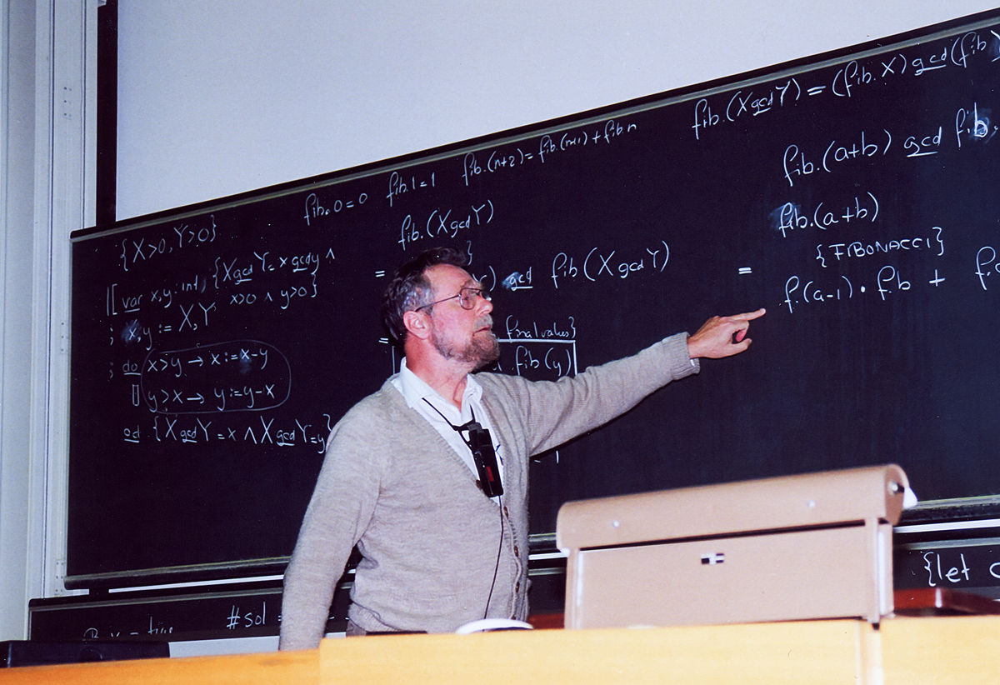
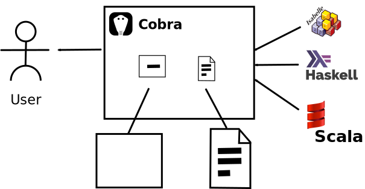

Presenting Proofs
The traditional way

A Short Demo
Sequences and their concatenation
Cobra System Architecture
Cobra System Architecture

A Hatful of Helpers
We use the following libraries:
- reveal.js as presentation engine
- CodeMirror as editor
- MathJax for display
$\LaTeX$ formulae:
$$\textit{Lan}_K T(c) = \int^m \textbf{C}(Km, c)\cdot Tm $$
Cobra Use Cases
- Class room presentations, conference talks
- One presenter, many mainly passive listeners
- Advantage: can react to audience questions
- Group presentations, tutoring, code review
- Small group of participants, listener and presenter not disjoint
- Advantage: active document can serve as focus of discussion
- Self study
- One user and their document
- Advantage: can interact with document instead of having to
deal with technical issues
Conclusions
- Cobra makes presentations active documents!
- Supports Isabelle, Haskell, Scala
- Available for all major operating systems at
http://www.flatmap.net/cobra
- Hands-On demo later in the day --- please do come.
- Try it --- we would love your feedback.